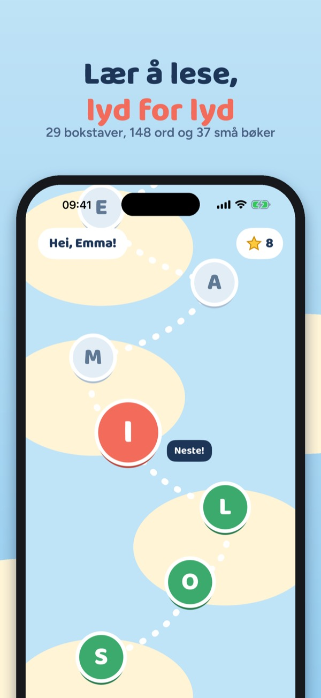
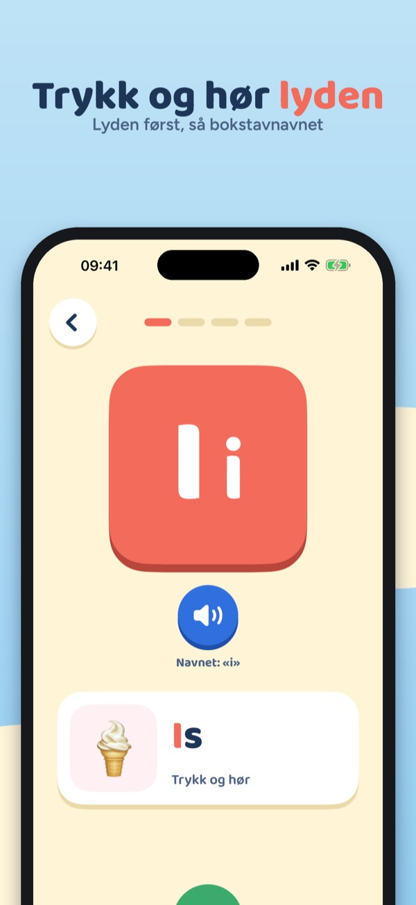
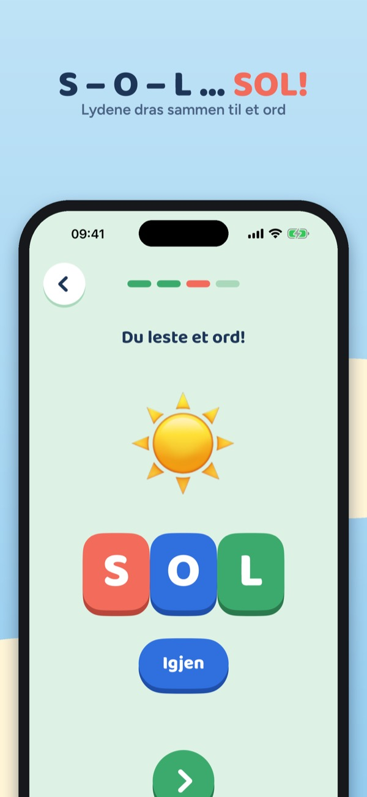
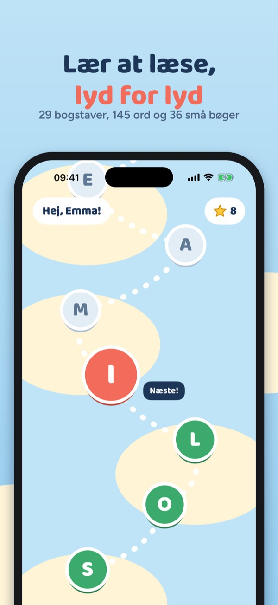
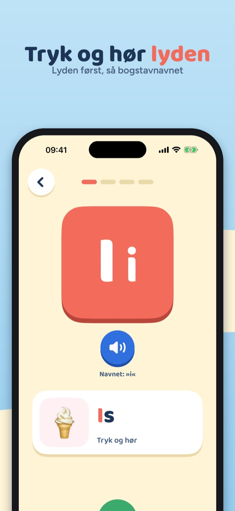
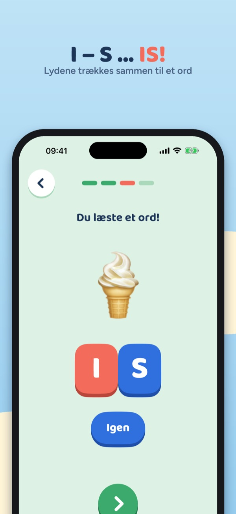

Lesestart – lær å lese
Bokstaver, lyder og lesebøker
Lær bokstavlydene én for én, sett lydene sammen til ord og les små bøker med bare de bokstavene barnet kan. For barn 4–7 år, uten reklame.
Last ned i App Store



Lesestart lærer barnet å lese slik mange lærere gjør det: lyd for lyd. Først lyden til bokstaven, så lydene sammen til ord, så små bøker.
29 bokstaver på et eventyrkart
- Alle bokstavene, også Æ, Ø og Å, i en rekkefølge der ord kommer tidlig: S, O, L, I, M, A …
- Hver bokstav er en liten leksjon i fire steg, og alt blir lest høyt, så barnet trenger ikke kunne lese
- Stor og liten bokstav sammen, lyden først og bokstavnavnet på et eget trykk
Fire steg per bokstav
- Bokstav og lyd: trykk på bokstaven og hør lyden, med et ord og et bilde
- Lydjakt: hør lyden og finn riktig bokstav
- Lydering: trykk på lydene og dra dem sammen til et ord – sol!
- Ord og bilde: les ordet og velg bildet som passer
Lesebok og ord
- 37 små lesebøker som bare bruker bokstaver barnet allerede kan
- 148 ord med bilder og 103 vanlige ord å kjenne igjen
- Trykk på et ord i boka for å høre det
Belønning
- Stjerner og et klistremerke for hver ny bokstav
For foreldre
- Se hvilke bokstaver barnet kan, minutter denne uka og ord som er lest
- Lyder som er litt vanskelige, med tips til hva dere kan øve på sammen
- Daglig tidsgrense med en vennlig «vi fortsetter i morgen»-skjerm
- Kjøp og innstillinger ligger bak en enkel voksenoppgave
De første bokstavene og kjøp
De første fem bokstavene (S, O, L, I og M) kan brukes uten kjøp. Ett engangskjøp åpner hele alfabetet, alle ordene og lesebøkene. Ingen abonnement.
Trygt for barn
Ingen reklame, ingen innlogging, ingen analyse og ingen data som deles. Alt lagres på enheten, og appen virker uten nett.
Støtte · Personvern
Læsestart – lær at læse
Bogstaver, lyde og læsebøger
Lær bogstavernes lyde ét ad gangen, sæt lydene sammen til ord, og læs små bøger med kun de bogstaver, barnet kan. Til børn på 4–7 år, uden reklamer.
Hent i App Store



Læsestart lærer barnet at læse, som mange lærere gør det: lyd for lyd. Først bogstavets lyd, så lydene sammen til ord og så små bøger.
29 bogstaver på et eventyrkort
- Alle bogstaverne, også Æ, Ø og Å, i en rækkefølge, hvor ord kommer tidligt: S, O, L, I, M, A …
- Hvert bogstav er en lille lektion i fire trin, og alt bliver læst højt, så barnet behøver ikke at kunne læse
- Stort og lille bogstav sammen, lyden først og bogstavnavnet på et særskilt tryk
Fire trin per bogstav
- Bogstav og lyd: tryk på bogstavet og hør lyden, med et ord og et billede
- Lydjagt: hør lyden og find det rigtige bogstav
- Lydering: tryk på lydene og træk dem sammen til et ord – sol!
- Ord og billede: læs ordet og vælg det billede, der passer
Læsebog og ord
- 36 små læsebøger, der kun bruger bogstaver, barnet allerede kan
- 145 ord med billeder og 100 almindelige ord at genkende
- Tryk på et ord i bogen for at høre det
Belønning
- Stjerner og et klistermærke for hvert nyt bogstav
Til forældre
- Se, hvilke bogstaver barnet kan, minutter denne uge og læste ord
- Lyde, der er lidt svære, med tip til, hvad I kan øve sammen
- Daglig tidsgrænse med en venlig »vi fortsætter i morgen«-skærm
- Køb og indstillinger ligger bag en enkel opgave for voksne
De første bogstaver og køb
De første fem bogstaver (S, O, L, I og M) kan bruges uden køb. Ét engangskøb åbner hele alfabetet, alle ord og læsebøgerne. Intet abonnement.
Trygt for børn
Ingen reklamer, intet login, ingen analyse og ingen data, der deles. Alt gemmes på enheden, og appen virker uden internet.
Support · Privatliv